Como usar o painel de Prospecção (FAAP) para encontrar, no exterior, pesquisadores que trabalham nos mesmos temas das linhas do seu programa, mesmo onde a UEA ainda não tem convênio.
10 paísesna Europa, África, Ásia e América do Norte
60.058conexões com as linhas da UEA
3 roteirospara sair do painel com uma lista de contatos
00Nesta edição
Sumário
O painel de Convênios mostra com quem a UEA já tem acordo. O de Prospecção olha para fora: compara as linhas de pesquisa oficiais dos PPGs com a produção de pesquisadores de universidades estrangeiras e aponta onde há afinidade para começar uma parceria nova.
Prospecção × Convênios: qual painel usar?
Pergunta
Painel
Onde fica
Já temos acordo com essa universidade? Até quando vale?
Gestão de Convênios
Internacionalização → Convênios & Redes
Nas universidades com que já temos acordo, quem pesquisa o que o meu PPG pesquisa?
Matchs de Convênios
Botão “Matchs de Convênios” no painel de Gestão
Onde, fora dos acordos atuais, há pesquisadores próximos das minhas linhas?
Prospecção (FAAP) · este guia
Internacionalização → Colaboração científica de alcance multirregional
Países e instituições cobertos (11/11/2026)
Alemanha (o país inteiro, 344 instituições), Estados Unidos (11, entre elas Harvard, MIT, Columbia, NYU e Boston University), Singapura (11), Reino Unido (8), Itália (5: Sapienza, Pisa, Bologna, Padova e Chieti-Pescara), África do Sul (Johannesburg e Stellenbosch), Gana, Argélia, Moçambique e Angola. Novos países entram à medida que a PROPESP amplia a coleta.
O painel de Prospecção fica numa página diferente da dos convênios, dividindo espaço com o painel de Mobilidade Acadêmica. Fique atento à aba certa.
Página onde o painel está publicadoColaboração multirregional ↗proreitoria.uea.edu.br/propesp/index.php/internacionalizacao-documentos/
Abra o site da PROPESPDigite proreitoria.uea.edu.br/propesp no navegador.
Passe o mouse em INTERNACIONALIZAÇÃONo menu do topo (marcador 1). No celular, toque no ícone de menu e na setinha ao lado de Internacionalização.
Clique em “Colaboração científica de alcance multirregional”É o terceiro item do submenu (marcador 2).
Role até “Dashboards de Internacionalização” e clique na aba “Prospecção PPG x Universidades Estrangeiras”A página abre mostrando a aba de Mobilidade Acadêmica. Troque para a aba de Prospecção.
Espere o painel carregarSão de 10 a 20 segundos: o painel compara milhares de pares de textos. Depois, use Abrir em nova aba ↗ para trabalhar com mais espaço.
proreitoria.uea.edu.br/propesp/
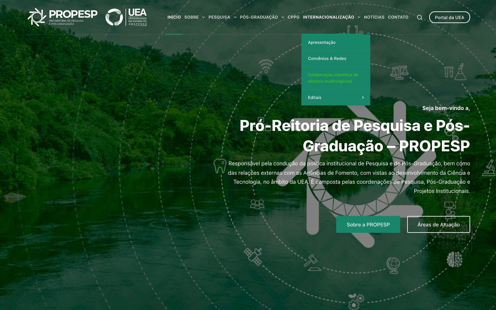
12
Menu Internacionalização aberto, com o item “Colaboração científica de alcance multirregional”.
…/internacionalizacao-documentos/
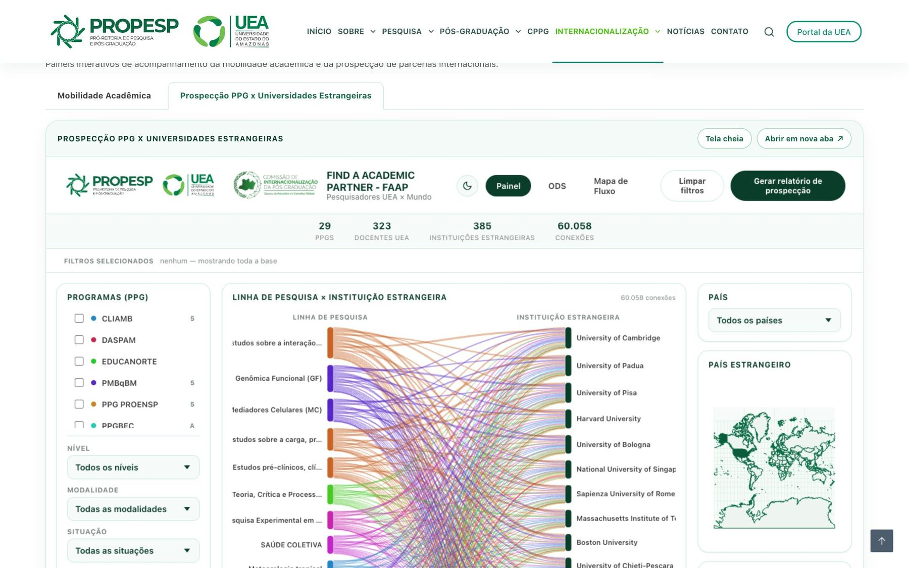
12345
Aba Prospecção PPG x Universidades Estrangeiras.
Tela cheia, sem sair da página.
Abrir em nova aba ↗: a forma recomendada de trabalhar.
Gerar relatório de prospecção (capítulo 7).
Filtros selecionados: mostra o que está filtrado no momento.
Atalho
Salve o painel aberto em nova aba nos favoritos (Ctrl + D ou ⌘ + D). Também é possível chegar a ele pelo botão Prospecção ↗ do painel de Gestão de Convênios.
02Capítulo 2
Conhecendo o painel
A tela segue a mesma lógica do painel de Matchs: a UEA à esquerda, as conexões no centro e o mundo à direita. Tudo o que você filtra num lado se reflete no outro.
Painel de Prospecção (11/11/2026: 29 PPGs, 323 docentes, 385 instituições estrangeiras e 60.058 conexões).
Barra do topo: Painel, ODS (capítulo 5) e Mapa de Fluxo (capítulo 6).
Limpar filtros.
Gerar relatório de prospecção.
Totais do recorte: PPGs, docentes, instituições estrangeiras e conexões.
Filtros selecionados: cada filtro vira uma etiqueta; o × remove só aquele filtro.
Programas (PPG): marque um ou mais. O número é o conceito CAPES.
Nível, modalidade, situação e Avaliação quadrienal CAPES 2021-2024.
Linhas de pesquisa: clique para filtrar; o número é a quantidade de conexões.
Docentes UEA: busca por nome; clique para abrir o perfil.
Linha de pesquisa × Instituição estrangeira: fios mais grossos = mais conexões.
Similaridade semântica (SBERT): passe o mouse num fio para ver a nota de 0 a 1.
País: escolha um dos 10 países cobertos.
País estrangeiro: mapa de calor, mais escuro = mais conexões.
ODS: pesquisadores estrangeiros por ODS; filtre por universidade.
Pesquisadores estrangeiros: ranking por número de conexões; clique para abrir o perfil.
ODS mais recorrentes
Abaixo do quadro de similaridade há uma nuvem de ODS: quanto maior o nome, mais conexões do recorte envolvem linhas da UEA classificadas naquele objetivo. Ela muda com cada filtro e aparece também no relatório. Clique num ODS para abrir a página de ODS.
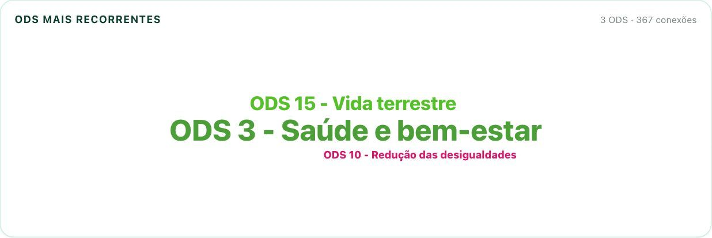
Nuvem de ODS para o recorte PPGSC + Itália: Saúde e bem-estar em primeiro plano.
Ajuda embutida
Não sabe o que um quadro mostra? Pare o mouse sobre ele por 3 segundos: aparece uma explicação curta do indicador e de como ele reage aos filtros. Funciona nos totais do topo, nos quadros do painel e nas páginas de perfil.
03Capítulo 3
Prospecção na prática
Um exemplo completo: o PPG em Saúde Coletiva (PPGSC) quer encontrar parceiros na Itália. Em sete passos, sai do painel com nomes, instituições e um relatório em PDF.
Marque o programaEm Programas (PPG), marque a caixa do PPGSC. Uma etiqueta “PPG · PPGSC” aparece em Filtros selecionados.
Leia o diagramaAgora o centro mostra só as linhas do programa e as instituições ligadas a elas, das mais conectadas (no alto) para as menos.
Escolha o paísNo menu País, selecione Itália. O mapa destaca o país e o diagrama passa a mostrar só as cinco universidades italianas.
Compare as universidadesA espessura dos fios mostra onde há mais pesquisadores próximos. Passe o mouse para ver a nota de similaridade.
Veja os temasA nuvem de ODS e o quadro ODS mostram em quais objetivos o recorte se concentra. Isso ajuda a escrever a justificativa de uma proposta.
Abra os nomesEm Pesquisadores estrangeiros, clique nos primeiros do ranking para ver perfil, ORCID e publicações (capítulo 4).
Gere o relatórioClique em Gerar relatório de prospecção e salve em PDF (capítulo 7).
Filtro: PPGSC
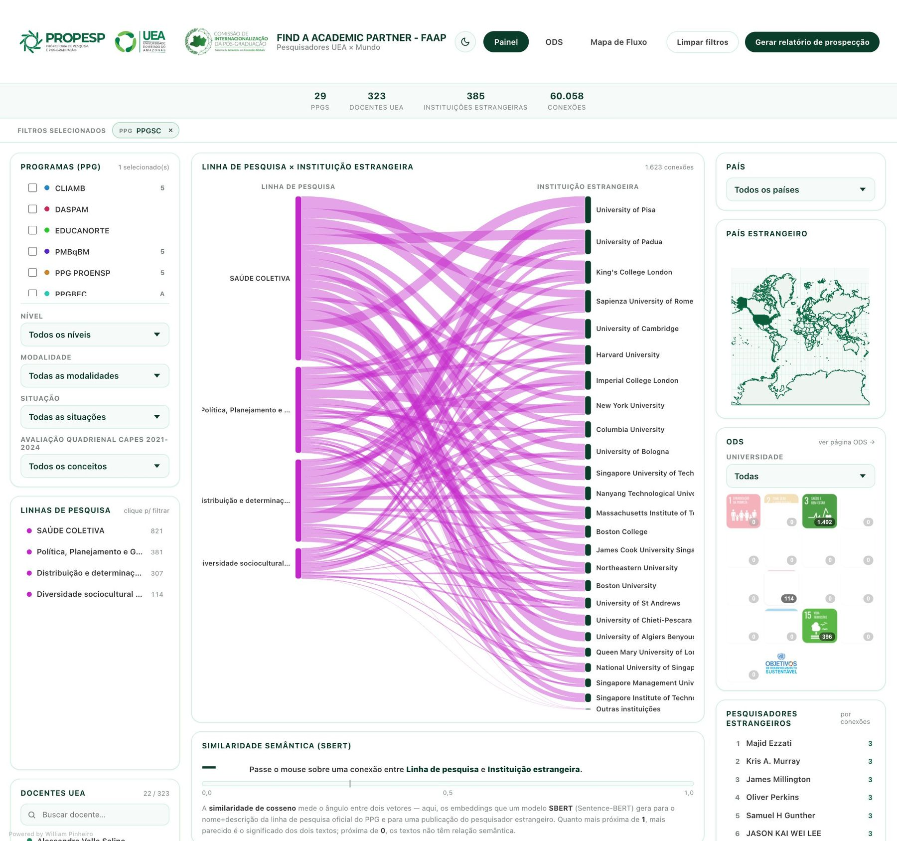
1
Passo 1. PPGSC marcado: a etiqueta aparece na barra de filtros e o diagrama fica só com as linhas do programa.
Filtros: PPGSC + Itália
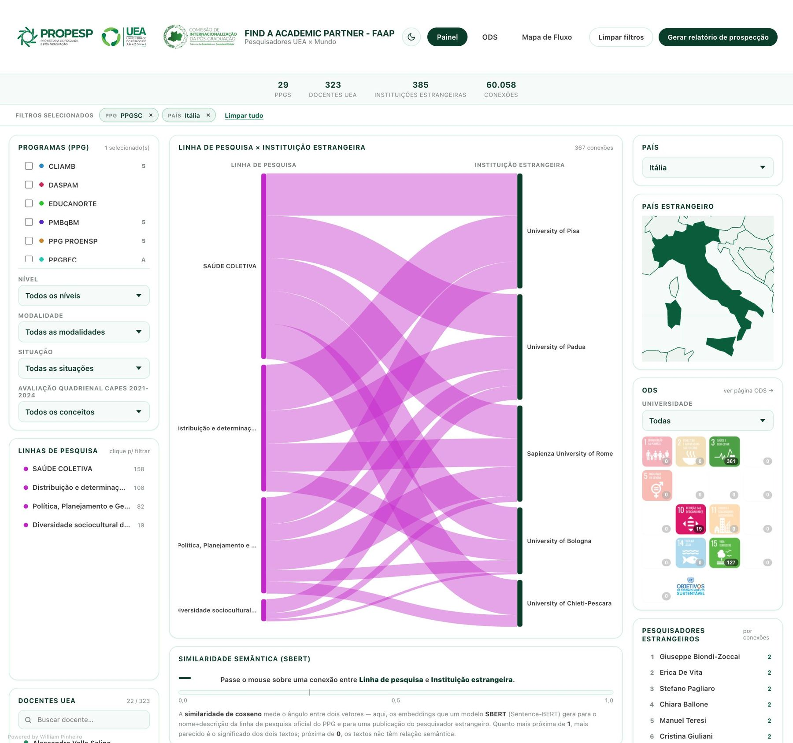
3✓
Passo 3. País = Itália: o mapa destaca o país e restam as cinco universidades italianas.
Como o painel chega às conexões
Um modelo de linguagem (Sentence-BERT) compara o nome e a descrição oficial de cada linha de pesquisa da UEA com as publicações de pesquisadores das instituições estrangeiras, encontradas no OpenAlex. Quando os significados são próximos, forma-se uma conexão. Notas a partir de 0,5 indicam afinidade forte. É afinidade temática: o painel não sabe se o pesquisador tem interesse ou disponibilidade.
04Capítulo 4
Perfis
O ranking dá os nomes; os perfis dão o contexto para decidir quem procurar e como se apresentar.
Perfil do pesquisador estrangeiro
…/professor.html
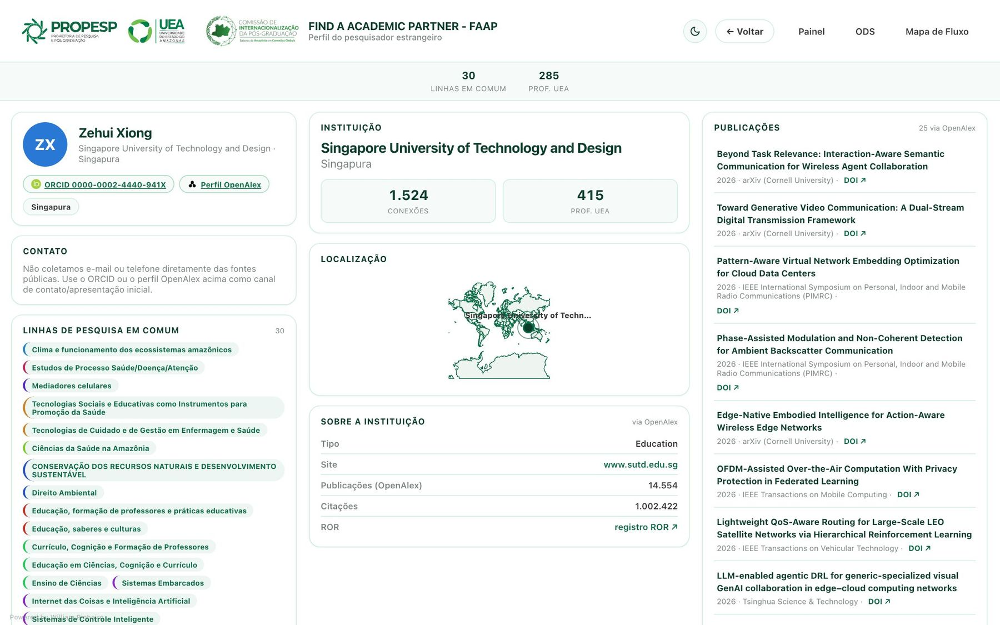
123456
ORCID e perfil OpenAlex do pesquisador.
Contato: o painel não coleta e-mail nem telefone; use o ORCID ou o OpenAlex como ponto de partida.
Linhas de pesquisa em comum com a UEA, coloridas por PPG.
Sobre a instituição: tipo, site, produção e citações (via OpenAlex), com link ROR.
Publicações recentes, com DOI.
← Voltar ao painel com os filtros mantidos.
Perfil do docente UEA
Ao clicar num docente, você vê o PPG, as linhas oficiais, os links para ORCID, OpenAlex e Lattes e a lista de pesquisadores estrangeiros conectados, ou seja, os parceiros potenciais daquele docente.
…/docente.html
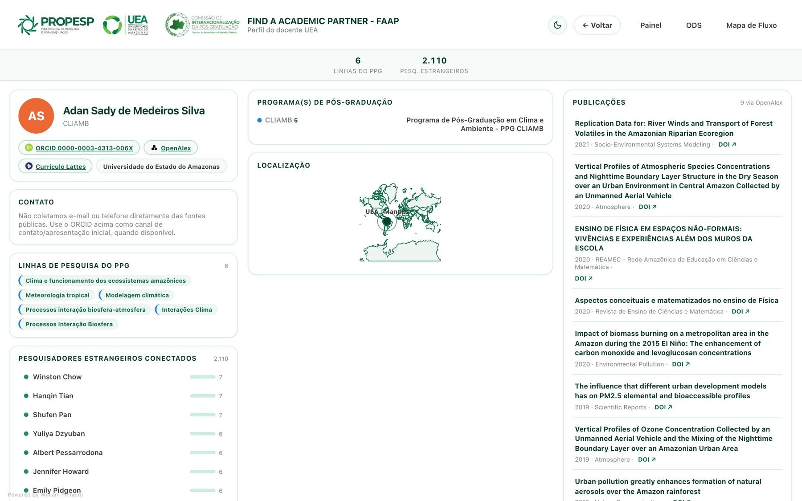
123
Links para ORCID, OpenAlex e Currículo Lattes.
Pesquisadores estrangeiros conectados ao docente.
Publicações do docente segundo o OpenAlex.
Antes do primeiro contato
Leia os títulos das 3 ou 4 publicações mais recentes: confirmam se o tema ainda é atual para a pessoa.
Cite no e-mail a linha de pesquisa em comum e um trabalho dela. Mensagens específicas recebem mais respostas.
Confira no painel de Gestão de Convênios se a instituição já tem acordo com a UEA: isso muda o caminho formal da parceria.
05Capítulo 5
Painel de ODS
As 166 linhas de pesquisa da UEA estão classificadas em até três Objetivos de Desenvolvimento Sustentável. Aqui você parte de um tema da Agenda 2030 e chega às universidades estrangeiras com gente concreta trabalhando nele.
Botão “ODS” no topo do painelAbrir ODS ↗internacionalizacao-create.github.io/DASHBOARD-PROSPECC-AO-PPGxUNI.ESTR-/docs/ods.html
FAAP · ODS
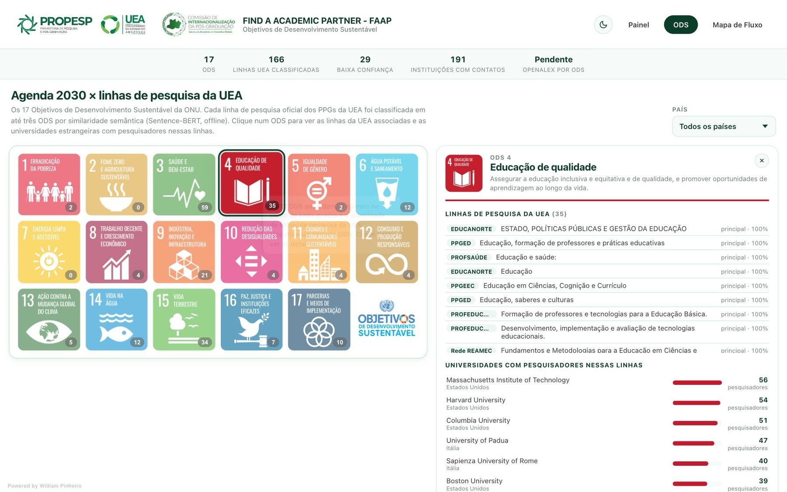
1234
Clique num ODS (aqui, ODS 4 · Educação de qualidade). O número é a quantidade de linhas da UEA no objetivo.
País: restringe as universidades.
Linhas de pesquisa da UEA no ODS, com o PPG de origem.
Universidades com pesquisadores nessas linhas, ordenadas pelo número de pesquisadores.
Universidade × ODS
A matriz cruza as universidades estrangeiras (linhas) com os 17 ODS (colunas). A célula conta os pesquisadores com match forte (nota ≥ 0,5). Mostra as 25 primeiras de 191 instituições com contatos; use o filtro de país para ver as demais.
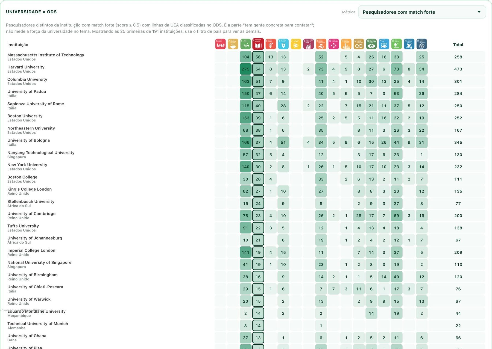
123
Métrica: o que a célula conta.
Coluna do ODS selecionado.
Total da universidade.
Leia com cuidado
A matriz mostra onde há pessoas para contatar num tema, não a força geral da universidade no ODS. Duas métricas extras (participação e especialização) ainda estão marcadas como “Pendente” no topo da página.
06Capítulo 6
Mapa de Fluxo
Um globo com as 385 instituições estrangeiras. Cada linha sai de Manaus; quanto mais escura, mais conexões com as linhas da UEA.
Botão “Mapa de Fluxo” no topo do painelAbrir Mapa de Fluxo ↗internacionalizacao-create.github.io/DASHBOARD-PROSPECC-AO-PPGxUNI.ESTR-/docs/flowmap.html
…/flowmap.html
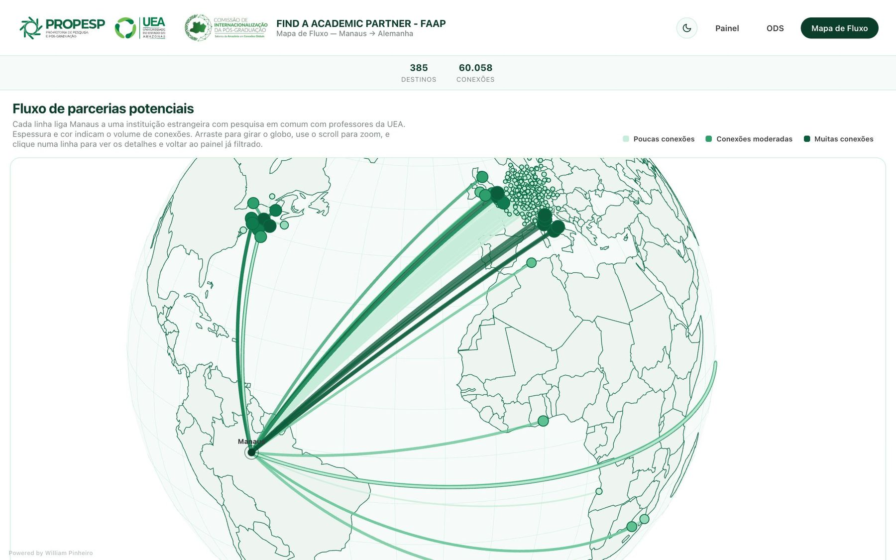
123
Legenda: poucas, moderadas ou muitas conexões.
Manaus, origem das linhas.
A Alemanha concentra a maior parte das instituições. Use a roda do mouse para aproximar.
Gire e aproximeArraste o globo e use a roda do mouse (ou o gesto de pinça).
Clique numa linhaAbre um quadro com as linhas de pesquisa e os professores UEA envolvidos com aquela instituição.
Volte ao painel já filtradoNo quadro, o painel abre filtrado pela instituição escolhida. Clique num docente para abrir o perfil.
07Capítulo 7
Relatório de prospecção
O botão Gerar relatório de prospecção transforma o recorte da tela num documento pronto para anexar a uma proposta ou levar ao colegiado. Ele sai com os filtros aplicados: filtre primeiro, gere depois.
Monte o recorteAplique PPG, linha, país ou universidade. Confira os totais do topo e as etiquetas em Filtros selecionados.
Clique em “Gerar relatório de prospecção”No canto superior direito. Uma nova aba se abre.
Clique em “Imprimir / Salvar como PDF”Botão verde no topo do relatório (marcador 1).
Escolha o destino “Salvar como PDF”Na janela de impressão, deixe Gráficos de plano de fundo marcado para manter as cores. Clique em Salvar.
Nomeie pelo recortePor exemplo: Prospeccao_PPGSC_Italia_2026-11.pdf.
Relatório de Prospecção · página 1
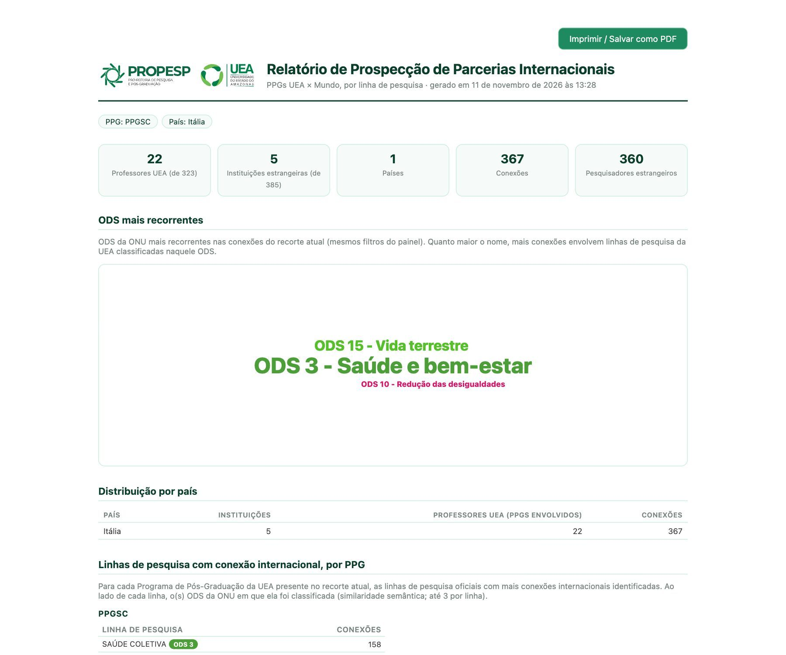
1234
1 Imprimir / Salvar como PDF · 2 filtros do recorte · 3 totais · 4 ODS mais recorrentes. Depois vêm a distribuição por país e as linhas de pesquisa por PPG.
Relatório · instituições estrangeiras
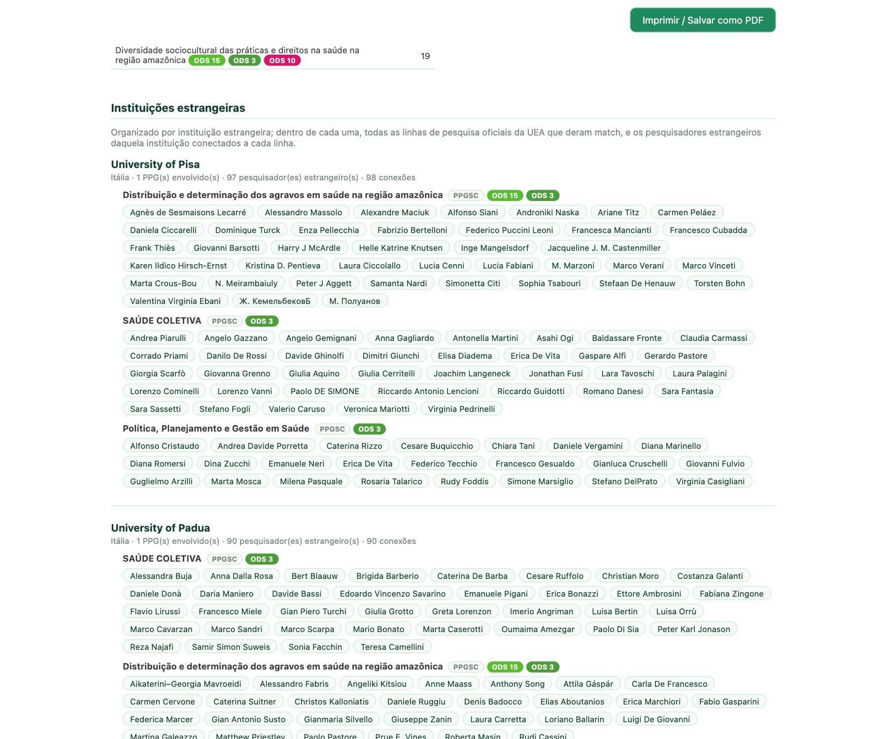
Instituições estrangeiras: para cada universidade, as linhas da UEA com match e os nomes dos pesquisadores ligados a cada linha. É a lista de contatos do recorte.
“Cliquei e nada aconteceu”
O navegador pode ter bloqueado a janela nova: clique no ícone da barra de endereço e permita pop-ups do site. Depois clique no botão de novo.
Se o painel estiver dentro do site da PROPESP, use antes Abrir em nova aba ↗.
Prefira o computador para gerar relatórios.
08Capítulo 8
Do dado à ação
A prospecção é o primeiro passo de uma parceria nova. Abaixo, nove usos práticos e três roteiros para transformar o painel em contatos, propostas e acordos.
Encontrar
Mapeamento
Onde o PPG tem mais afinidade
Filtre pelo programa e anote as 5 instituições com mais conexões em cada país. É o mapa de oportunidades do programa.
Onde: Painel → PPG → País
Linha a linha
Parceiros por linha de pesquisa
Linhas com poucas conexões internacionais indicam onde o programa precisa de esforço específico; linhas com muitas, onde já há terreno fértil.
Onde: Painel → Linhas de pesquisa
Docente
Parceiros para cada orientador
O perfil do docente lista pesquisadores estrangeiros próximos do trabalho dele: um bom ponto de partida para coorientação e missões.
Onde: Docentes UEA → perfil
Propor
Novo convênio
Escolher com quem assinar
Antes de propor um acordo, mostre que há afinidade real: o relatório lista linhas e pesquisadores em comum. Confira no painel de Gestão se já existe convênio.
Onde: Relatório de prospecção + Gestão de Convênios
Editais
Justificar parcerias em propostas
Chamadas de cooperação e mobilidade pedem parceiros com aderência temática. O recorte por PPG e país, com os ODS, dá essa evidência.
Onde: Relatório de prospecção
Agenda 2030
Redes por ODS
Escolha um ODS e use a matriz Universidade × ODS para juntar várias instituições fortes no mesmo tema numa rede.
Onde: ODS → matriz
Conectar
Mobilidade
Destinos para sanduíche e pós-doc
Para um estudante, filtre pela linha dele e por um país com bolsa disponível: o ranking sugere possíveis supervisores.
Onde: Linha + País → Pesquisadores estrangeiros
Eventos
Convidados e palestrantes
O ranking por linha gera uma lista de nomes para seminários, bancas e disciplinas compartilhadas, inclusive em formato remoto.
Onde: Painel → Linhas → ranking
Colegiado
Planejamento de internacionalização
Projete o Mapa de Fluxo e o painel filtrado pelo PPG para discutir prioridades com base em dados.
Onde: Mapa de Fluxo + Painel
Três roteiros para começar hoje
15 min
Roteiro A · Lista curta de parceiros do PPG
Marque o seu PPG.
Para cada país de interesse, escolha-o em País e anote as 3 instituições com fios mais grossos.
Abra os perfis dos 2 primeiros pesquisadores de cada instituição.
Gere o relatório e guarde com a lista curta.
10 min
Roteiro B · Um supervisor para um estudante
Clique na linha de pesquisa do estudante.
Escolha o país do edital ou da bolsa.
Abra os perfis do topo do ranking e leia as publicações recentes.
Leve 2 ou 3 nomes para a conversa com o orientador.
20 min
Roteiro C · Da prospecção ao convênio
Escolha uma instituição com muitas conexões com o seu PPG.
Confira no painel de Gestão de Convênios se já há acordo.
Sem acordo: gere o relatório filtrado pela instituição e anexe à proposta de convênio.
Com acordo: passe ao painel de Matchs de Convênios e siga o guia de convênios.
Checklist pessoal
Os passos numerados têm uma caixinha “feito”, salva só neste navegador.
09Capítulo 9
Dúvidas e cuidados
O painel aponta caminhos; quem decide e valida é a coordenação.
As instituições do painel têm convênio com a UEA?
Em geral, não. A Prospecção existe justamente para olhar além dos acordos atuais. Para saber se há convênio, consulte o painel de Gestão de Convênios.
Por que só esses países?
A coleta é feita país a país (ou universidade a universidade) e depende de cota de acesso a bases abertas. Hoje são 10 países; outros entram nas próximas atualizações. Se o seu PPG tem interesse num país que não aparece, informe a PROPESP.
Por que a Alemanha domina o painel?
Ela foi coletada inteira (344 instituições), enquanto nos outros países entraram universidades escolhidas. Compare países com cuidado: mais conexões na Alemanha refletem também a cobertura maior.
Uma conexão garante interesse do pesquisador?
Não. Indica afinidade temática entre textos. Interesse e disponibilidade só se confirmam no contato direto.
Os perfis trazem e-mail?
Não. O painel não coleta e-mails nem telefones; usa só dados públicos de produção científica (ORCID, OpenAlex, Lattes).
Glossário rápido
FAAP
Find a Academic Partner, nome do painel de Prospecção.
Conexão
Par “linha de pesquisa da UEA × pesquisador estrangeiro” com afinidade de significado.
SBERT
Modelo de linguagem que compara o significado de textos.
Similaridade
Nota de 0 a 1; a partir de 0,5 a afinidade é considerada forte.
OpenAlex
Base aberta de publicações, autores e instituições.
ORCID
Identificador internacional de pesquisadores.
ROR
Registro internacional de identificadores de instituições de pesquisa.
ODS
Os 17 Objetivos de Desenvolvimento Sustentável da Agenda 2030.
Guia da Prospecção de Parcerias · PROPESP / UEA · Edição nº 2, novembro de 2026. Prints e números consultados em 11/11/2026; o painel é atualizado periodicamente. Autoria: William Pinheiro · Currículo Lattes
 Edição nº 2 · Novembro 2026
Edição nº 2 · Novembro 2026